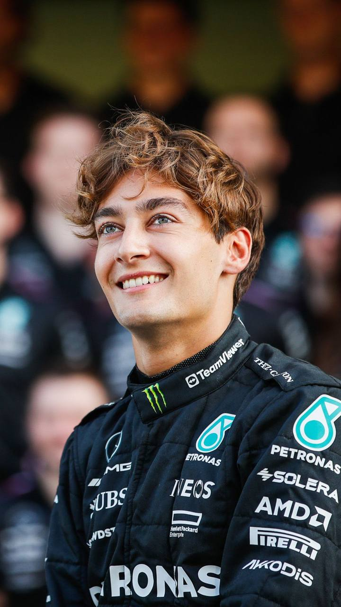

George Russell
British Formula 1 Driver
Full Name: George William Russell
Date of Birth: 15 February 1998
Place of Birth: King's Lynn, England
Nationality: British
Parents: Steve Russell and Alison Russell
Siblings: Cara Russell and Benjy Russell
Partner: Carmen Montero Mundt
Occupation: Formula 1 Driver
Team: Mercedes
Race Number: 63
Biography
George William Russell is a British racing driver who competes in Formula 1 for Mercedes. He was born on February 15, 1998, in King's Lynn, England. Russell began karting at a young age and gradually progressed through the junior categories of motorsport. After successful seasons in GP3 and Formula 2, he made his Formula 1 debut with Williams in 2019.
Early Life and Family
George Russell is the youngest child of Steve and Alison Russell. He has an older sister named Cara and an older brother named Benjy. His brother was also involved in karting, which introduced George to motorsport at a young age. George began karting when he was seven years old and developed a strong passion for racing.
Formula 1 Career
Russell developed his racing career through several junior championships before reaching Formula 1. He became GP3 Series Champion in 2017 and won the Formula 2 Championship in 2018. These achievements helped him earn a Formula 1 seat with Williams for the 2019 season.
After three seasons with Williams, Russell joined Mercedes as a full-time Formula 1 driver in 2022. During his first season with the team, he achieved his first Formula 1 pole position and later won his first Grand Prix at the São Paulo Grand Prix.
Personal Life
George Russell has been in a relationship with Carmen Montero Mundt since 2020. In 2026, the couple announced their engagement. Outside racing, Russell has also served as a director of the Grand Prix Drivers' Association, representing the interests of Formula 1 drivers.
Important Career Events
- 2006 – Began competing in karting.
- 2014 – Won the BRDC Formula 4 Championship.
- 2017 – Won the GP3 Series Championship.
- 2018 – Won the Formula 2 Championship.
- 2019 – Made his Formula 1 debut with Williams.
- 2021 – Achieved his first Formula 1 podium with Williams.
- 2022 – Joined Mercedes as a full-time Formula 1 driver.
- 2022 – Won his first Formula 1 Grand Prix in São Paulo.
- 2024 – Won the Austrian and Las Vegas Grands Prix.
- 2025 – Won the Canadian and Singapore Grands Prix.
Achievements and Contributions
- GP3 Series Champion in 2017
- Formula 2 Champion in 2018
- Multiple Formula 1 Grand Prix victories
- Formula 1 race winner with Mercedes
- Director of the Grand Prix Drivers' Association
- Graduate of the Mercedes Junior Programme